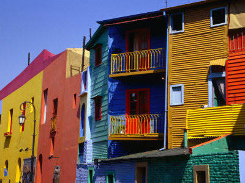

Thu, 25 Nov 2010 11:04:00 · Cities · city · travel · photography
The World's Most Colourful Cities

For some extra awesomeness, check out the full gallery here.
Thu, 25 Nov 2010 11:04:00 · Cities · city · travel · photography

For some extra awesomeness, check out the full gallery here.